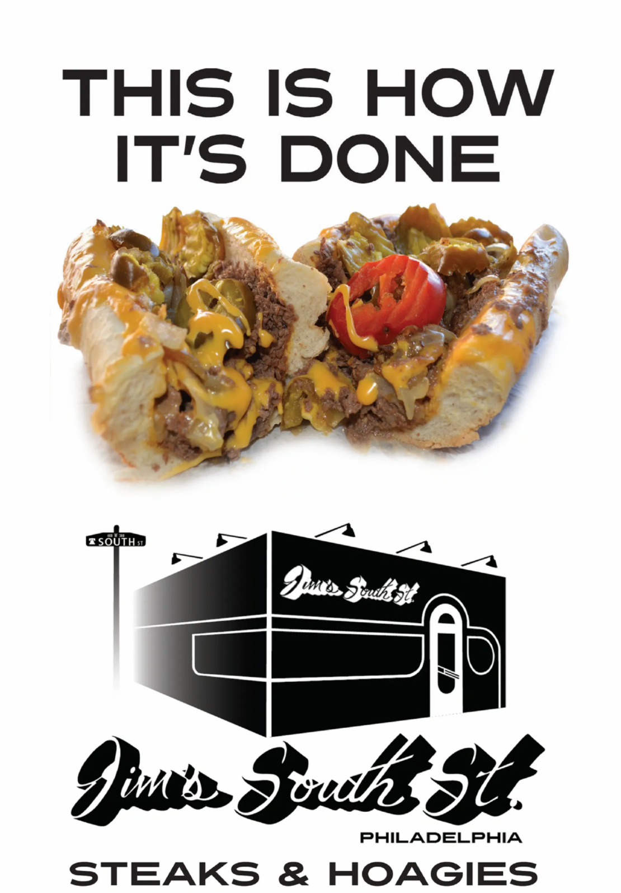
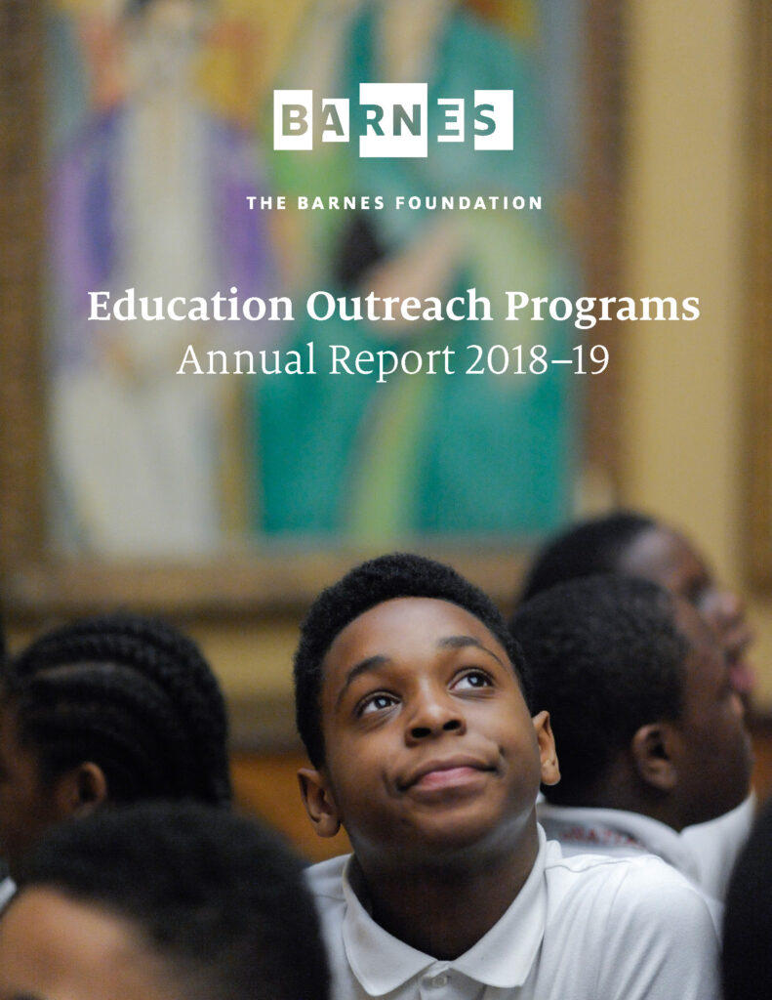
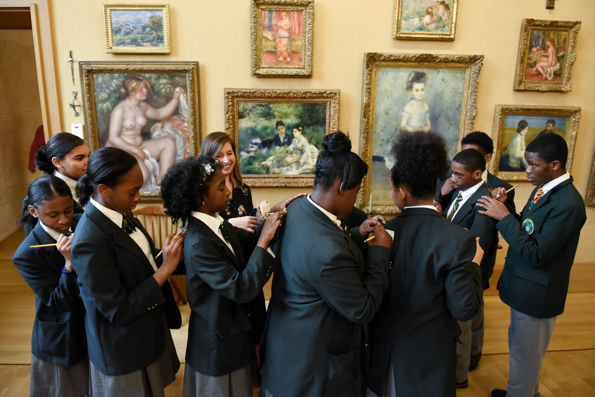
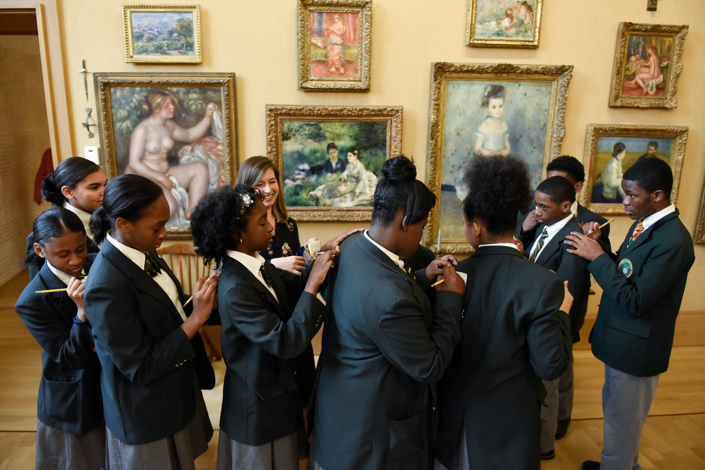
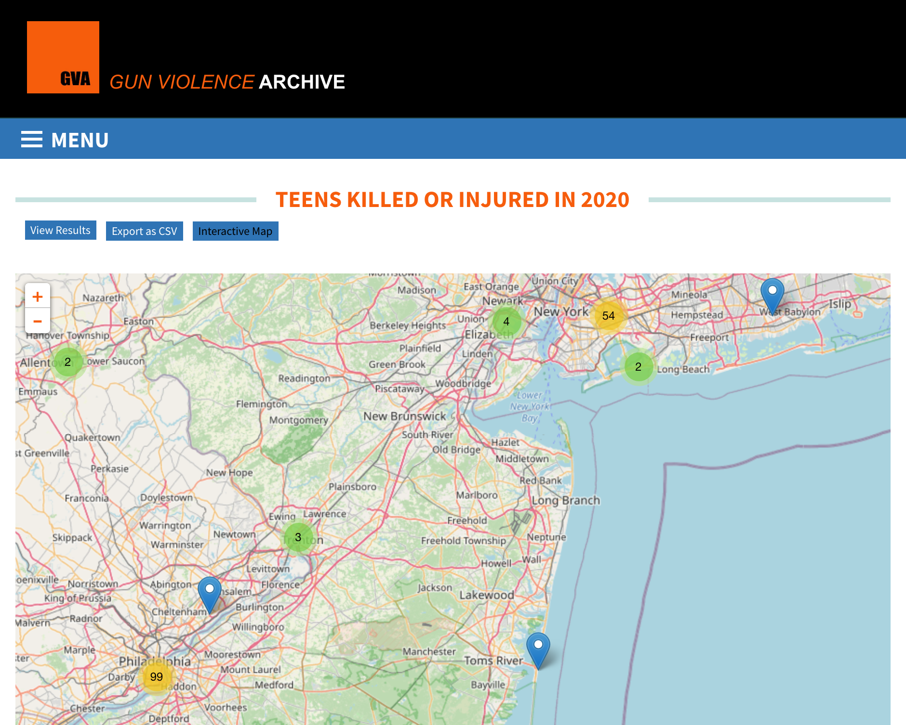
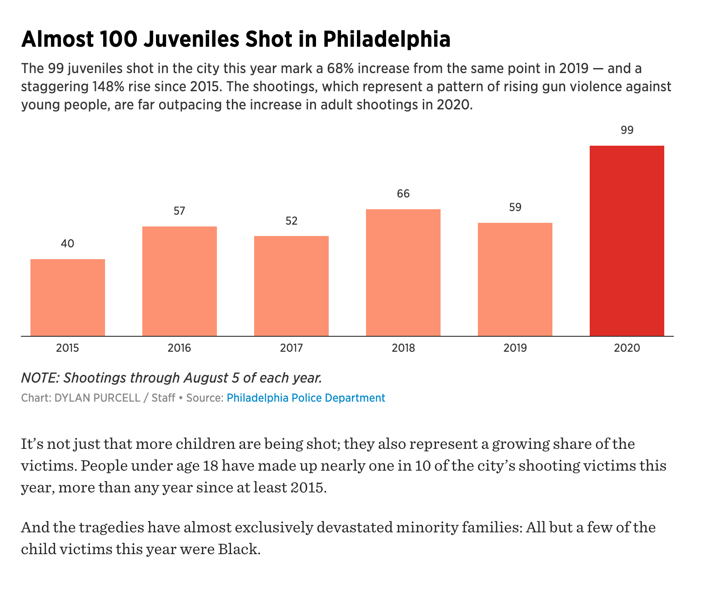
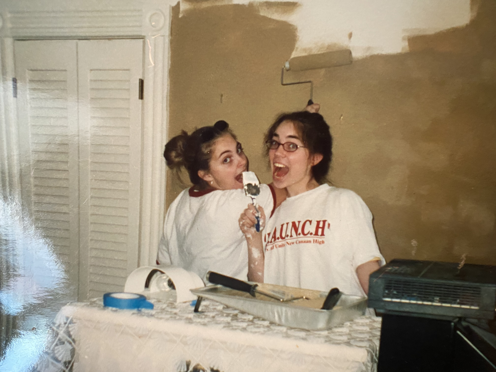
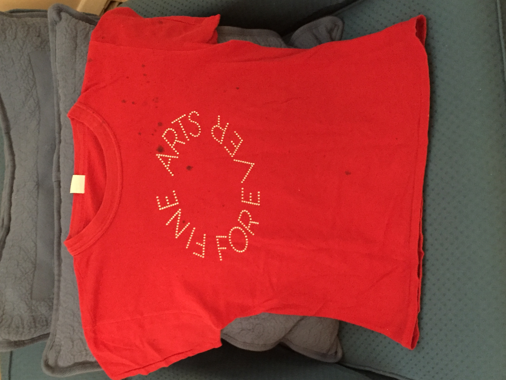
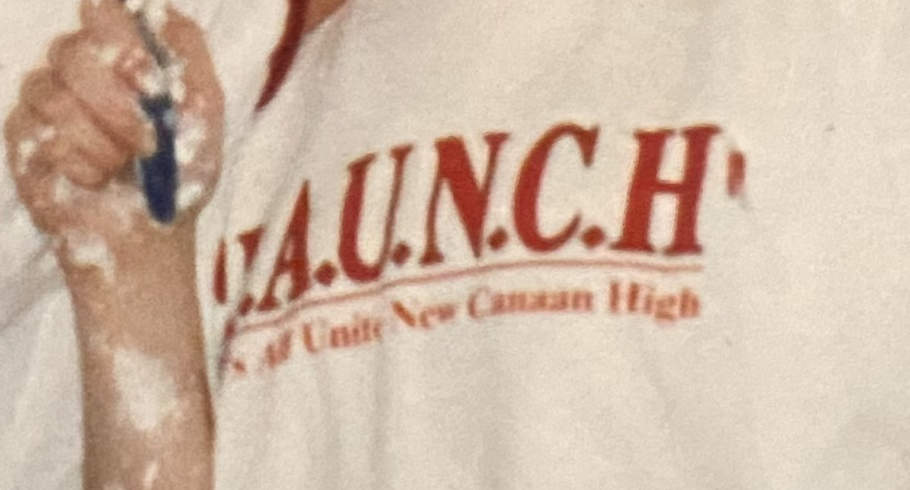
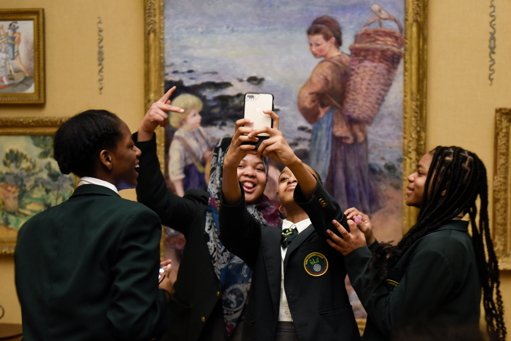

Behind the Project
The Gist
The Barnes Witz is an attempt to envision—first—the Philadelphia Barnes Foundation collection as a digital experience designed specifically for teenagers and—second—to create a hypothetical starting point for the museum to offer itself as a community space for high school students in and around Philadelphia.
And the name? "Witz" is a combination of "whiz" and "wit," a Philly-specific reference to ordering a cheesesteak "wit" onions and Cheez Whiz.
The Inspiration
Last summer I worked on a couple of freelance projects for the Barnes Foundation’s education department, the 2nd of which was the Annual Report (2018-19) for the museum’s Education Outreach Programs.
The photos I was given to pick from in laying out the Report can still bring tears to my eyes. The diverse group of Philadelphia’s youngsters shown here have expressions on their faces that speak to the innocence, hope, and joy, not just of youth itself, but of all the possibilities in life ahead.

 

Why cry about this? Perhaps it’s knowing how generally difficult the years beyond youth can be—those pesky teenage years—or at least that I remember them being painful.
And not only because of that—rather also, Philadelphia can be a particularly treacherous place to be a teenager—beyond feeling sad, confused, or awkward. To cross over between being a child and an adult in Philadelphia can happen much too soon, or not at all. In a remarkable (and upsetting) interactive map in the Gun Violence Archive, an exploration reveals that Philadelphia would seem to have the 2nd highest number of incidents of teens killed or injured by gun violence recorded in one concentrated city in 2020—2nd only to Chicago, with 99 incidents recorded as of November 2020. In comparison, the Twin Cities report 27 incidents; New York: 54; and Los Angeles: 23.
In the past unprecedented year, shootings in Philadelphia have risen dramatically. As reported in the Philadelphia Inquirer in August of this year, “People under 18 have made up nearly one in 10 of the city’s shooting victims this year, more than any year since at least 2015.”
When I was under 18, on the other hand, I was safely tucked away in a Connecticut commuter town, where my grandmother drove me to piano lessons and dance classes.
Here I am with my friend Cate painting my room “coffee with cream” (or “unmentionable brown” looking back on it...) in a classic teenage act. Despite all the reasons I had to feel relatively safe, I still felt anxious, angsty, and largely out of place most every day at school—in most places other than in my art classes, really. I can’t imagine readily fearing gun violence on top of all of these other complex feelings.
Looking at the photos in the Barnes Education Report reminded me of when one of my high school art teachers took my class to New York (we were an hour away) to see the Whitney Biennial. In that moment of my life, my first visit to the Whitney was a much-needed reminder that the world was larger than my lacrosse- and football-focused high school. It gave me much-needed hope and optimism about what could be ahead and beyond that period of my life. I do believe that that moment and others like it gave me reserves of energy that I may not have had otherwise to push through some sad and scary moments of teenager-dom. I even bought a T-shirt on that fateful trip, which I still have, and it is appropriately splattered with ink.
One sidenote of additional context: in the photo above, I am wearing a t-shirt that my high school gave out on a special day of programming that took place as an immediate response to the Columbine shootings: “Let’s All Unite New Canaan High,” or L.A.U.N.C.H. Day. And a couple of years later, I would watch live footage of 9/11 broadcasted out of the TVs suspended from the ceiling in the hallways of my high school, and later that evening, go to the local park to see the reddish fiery sky of New York on fire in the distance. My mom would explain when she got home from work that the first plane flew over her head as she walked to work from Grand Central, and she had thought it had been flying disturbingly low.
Needless to say, everyone has their own milestones of growing up.
And so, now add to all of this—imagining what teenagers of this era are going through… even just with Instagram and Snapchat, forget the PANDEMIC...
This project grew out of my desire to bring places that have remained as constants of comfort and inspiration to me—museums in general, that is—to teens, no matter where they are, or what context they are coming from.
In completing the Barnes Education Report, I had noticed that the museum’s outlined programming stopped at 8th grade (in my mind —just at the beginning of when it gets really hard…).
Philadelphia also recently suffered extreme cuts to its Arts and Culture budget, which directly affects hundreds of arts-based opportunities for the youth of the city. Studies and reporting, such as Room to Rise, an inter-museum report related to teen programming in arts museums, show that there are a great many benefits in providing teens with the impetus to focus on and direct their creative instincts in a productive way.
The Task at Hand
A Problem Statement
The questions that factored heavily into my design exploration were as follows:
- How can a museum reach and be interesting to a next generation of screen-oriented supporters and patrons?
- How can a museum be accessible digitally in a manner that acknowledges its physical space as a relevant context for its collection?
- How can the Barnes, specifically, utilize both its history of being rooted in education as well as its historic collection of artworks to reach and inspire the teenage adolescents of Philadelphia and beyond?
- What can a web space for a museum be?
- Can a non-social-media web space instill a sense of community and belonging in its users?
Toward a Solution
Research, Data Collection, User Testing Results
It was also important to me to bring an element of personal engagement with the collection into play. I had several ideas in mind, but as the project progressed, and I gathered information from various knowledgable sources, a solution was solidified.
One of the first ideas that came to mind was a quiz-type game, where a student could input their age and information about what various artists represented in the collection were doing when they were the same age. Due to time, information, and programming-capability constraints, this idea quickly was set aside as a potential "Next Steps," further-down-the-line idea.
Another idea that was an early iteration was incorporating some kind of social media recreating-artworks challenge. This was ultimately less interesting to me as it has already been done, and, while it could definitely easily garner attention and engagement with a museum's collection, I kept coming back to the idea of wanting a teenager to really feel that it was possible that one day, perhaps their work could be hanging in a museum. And even if a teen has zero interest in this kind of aspiration, that metaphorically, it would be inspiring on many levels to imagine that, "what if? Because I can really do anything" sentiment.
I am surprised at the fruitful experiences I had in meeting with and collecting data from various relevant and fascinating sources.
My 15-Year Old Brother
Meeting first with my brother Henry (over the phone) led me to realize that teenagers of this era really do have different minds than my Millenial generation. When I asked him what he thought of when he thought of a digital museum exhibit, he immediately referenced AR, and school-related experiences he had had with that technology. I was happy that my site endeavored to address 3D space, even in some capacity. It was also helpful to hear his general sentiment upon seeing my site prototype for the first time: "This is great, just don't make it like, 'you should learn this,' but more like, 'you can learn what you want to if you think it's cool.'"
Jen Nadler, Director of preK-12 and Educator Programs at the Barnes Foundation
Jen really has to be credited with helping me to solidify several important ideas. First of all, early on in our meeting, Jen pointed out that, while the Barnes has little teen-specific programming, an overarching theme of museum education practice for teens is focusing on their innate need for CHOICE, and to have their voices and points-of-view taken seriously and put out there. She asked me nonchalantly if there were a way for users to include or pair their own work alongside the artworks of their choice throughout the collection. As a result I endeavored to create the option for users to add their own artworks, or images of their choice (using URLs at least) to the existing carousels. While I have not finalized the functionality of this feature, I hope to be able to do so by the end of the semester.
70+ High School Students
In brainstorming how I could get a broader array of responses from teens, as opposed to just speaking with my brother, I remembered having bumped into my freshman year high school art teacher last spring. Realizing that she was still teaching high school art classes, even during the pandemic, I reached out to her and provided her with a survey that anonymously gathered data from teenagers in her 5-or-so art classes. She warned me that she was teaching 3 sections of "Computer Art" this semester, noting that the students in those classes "aren't your typical art student." Even better! As a result of these responses, I have such exciting insights into what teens these days enjoy the most about their digital experiences, and the elements of design that they are most quick to judge in visiting a website (they are color and photos!)
Olivia Verdugo, Art Director at the Barnes Foundation
Olivia advised me in my identity design and the design of the website. It was because of her feedback that I followed a path that I hadn't been sure of in terms of the logo, and I am happy with how the logo works on its own, and in a "lock-up" with the existing Barnes identity designed by Pentagram to speak to the Barnes ensembles.
Tools
For this project I worked primarily with coding and Adobe design software, both tracks that speak to what the MAGWD has focused us on. I truly enjoy working in both areas, and using both at the same time is a fun way to get relief from both interchangably. Each one refreshes the other.
My process centered around trying coding solutions out with GitHub, and using GitHub's capabilities to "branch" off in various directions with the confidence that you can merge or loop back around if one unknown exploration doesn't work out. My design process for the identity, similarly involved many layers of exploration and journeys, all of which were recorded as part of what makes the project a rich endeavor.
Tools used included:
- HTML, CSS
- Javascript (Vue)
- GitHub
- InDesign
- Illustrator
- AfterEffects
- Photoshop
Process + Iteration
At Present
Deliverables
Deliverables
Deliverables include:
- Barnes Carousel Webspace for 1 gallery
- Carousel Webspace Title Card on-click event for added artwork info + engagement
- Barnes Witz Homepage with Mission Language, etc. (only currently looks as intended on CHROME web browser)
- Barnes Identity + Style Guide
- Barnes Logo + Accompanying Animation
- Carousel Webspace Title Card MODAL version (still hoping to achieve this)
- Carousel artwork addition upload option (via URL only) (still hoping to achieve this)

Next Steps
Other Items to Tackle
The solutions I arrived at were a product of combining my original intent, feedback outlined above, and the constraints of time. I endeavor to continue perfecting the functionality of the interactive elements related to the carousels and finalize inputting the artworks information into their title cards. I also hope to incorporate merchandise mock-ups and additional social media-friendly animations and templates for use in advertising and social media sharing.